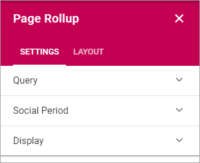
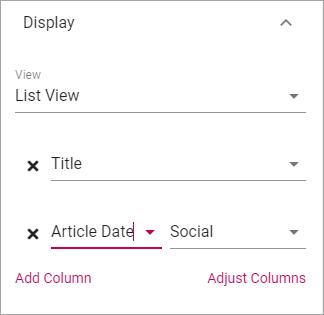

Page Rollup¶
This block can be used for many purposes, for example to rollup new news, latest news and similar - and for much more regarding pages, not just for news.
Settings¶
These settings are available for the block:
Query¶
Here you can set the following:

- Scope: Select scope for the block; Publishing Apps or Page Collections. Then open the list below and select Publishing Apps/Page Collections.
- Exclude current page: The default settings is to exclude the current page, but if you, for some reason, would like to include the current page, uncheck this option.
Display¶
Select View here. Note that a preview is shown in the block.

The following lists all available display settings. Which of them will be available depends on the display selected.
- Title: Select the property that contains the title for the item to display. Available for “Single Item” only.
- Description: Select the property that contains the description for the item(s) to display. Available for “Single Item” only.
- Image: Select the property that contains the image for the item(s) to display.
- Date: Select the property that contains the date for the item(s) to display.
- Overlay: If an overlay text should be shown on the image(s), add the text here. Available for “Roller” only.
- Show Likes/Comments: If the number of likes and comments should be displayed for the item, select this option.
- Show Rating: If the rating for the page(s) displayed should be shown, select this option. Available for “Listing With Image” only.
- Article Date: Select the property that contains the article date for the item(s) to display. Available for “Single Item” only.
- Image x and y: Select the image format here. Available for “Single Item” only.
- Open page as a dialog: If the page should be opened in a dialog instead for in a page (new or current), select this option.
- Summary: Select the property that contains the page summary for the item to display.
- Content: Select the property that contains the page content for the item to display. Available for dialog display only.
- Content Image: Select image to display, if any. Available for dialog display only.
- Title: If a block title should be displayed, enter the title here.
- No result text: Enter the text that will be shown if no page can be displayed.
- Hide block when not data: Select this option if the block should be hidden when there’s nothing to display.
- Trim duplicates: Certain settings may result in duplicates being displayed. Select this option to make sure only one copy of the item is displayed.
- Paging: Select paging here; “No paging”, “Classic” or “Scroll”.
- Item limit: To limit the number of items being displayed, add a fixed number here. Note that if combined with “No paging”, the number of items you enter here are the only items users can access from the list.
- Sort by: Choose what the list should be sorted by, and then select ascending or descending.
- Show create button: To make it possible for editors to create a new page from here, select this option to add a button to the block heading, and type the name for the button. Available for “List View” only.
- Show link: You can add a link button at the bottom of the list. The first page collection is default, but you can link to any target.
- Link label: Add the text to be shown for the link here. Available only if “Show link” is selected.
- Link url: Add the url to open when a user clicks the link. Available only if “Show link” is selected.
- Open link in new tab: If the link should be opened in a new tab (as opposed to in current window or dialog), select this option. Available only if “Show link” is selected.
- Hide Read News: If this list displays news, select this option to hide all news pages the logged in user has read.
- Padding: Add some padding between the list and the block border, if needed.
Note! For “List View” you also have to add at least one column, for the display to work. Here’s an example with two columns added:
This could show the following:

“2 months ago” etc is the “Social” setting for date. If you would like to show exact dates instead, select “Normal”.
Layout¶
The Layout tab contains general settings, see: General Block Settings
Social Period¶
Use these settings to decide for how long likes, comments, ratings and page feedback should be displayed here. The default setting is “No limit” but you can select one week, two weeks or one month instead.